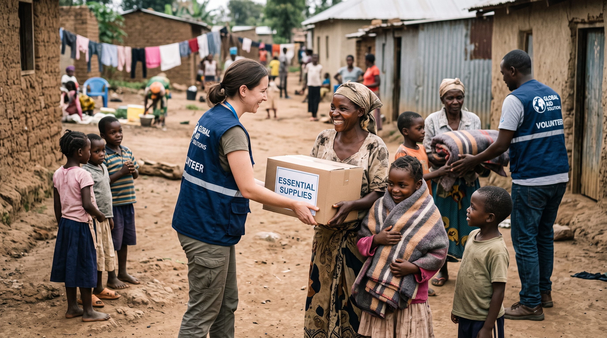

Sobre a Nossa Organização

A Mãos Solidárias é uma organização do terceiro setor vocacionada para combater as vulnerabilidades sociais através de iniciativas de educação e auxílio humanitário.
Canais de Contato
- Endereço: Rua da Cidadania, 120 - Centro
- Telefone: (11) 98765-4321
- E-mail: contato@maossolidarias.org.br